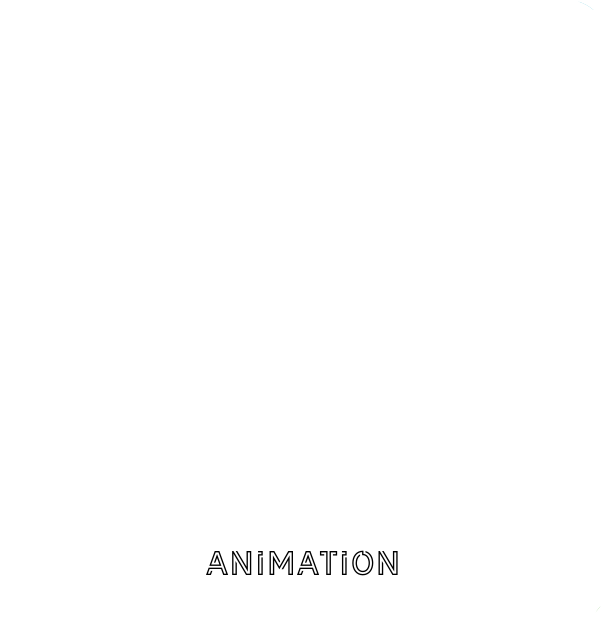
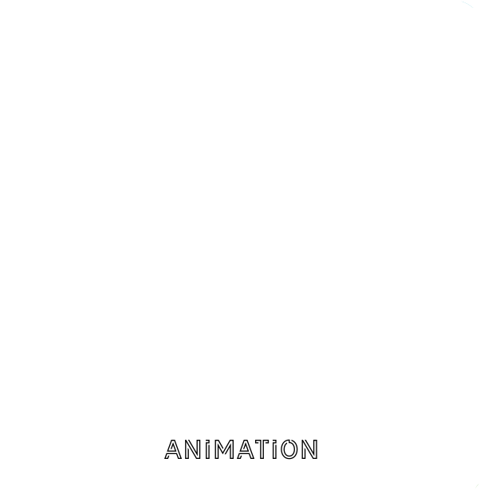
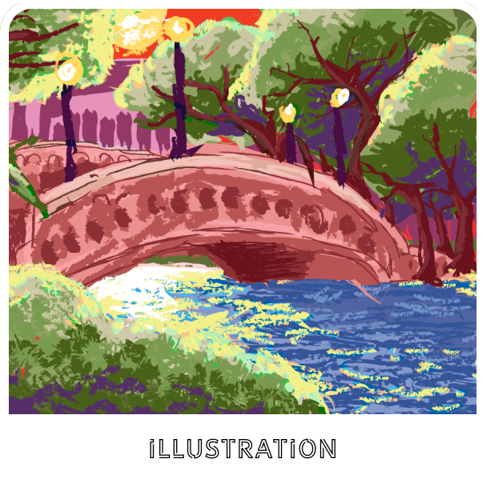
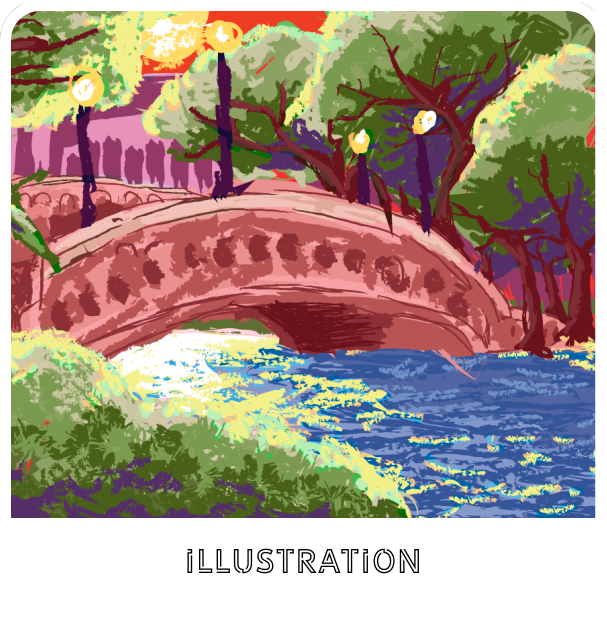

known for her proficiency in animation and print media. With a keen eye
for detail, Leslie crafts visually stunning and engaging content, including
fliers, posters, stickers, and animated GIFs. Her expertise extends to
creating impactful advertising campaigns that resonate with target
audiences.
In addition to her solo projects, Leslie has successfully collaborated
with freelance designers, Trenton Artworks, and various college organizations.
Her adaptability and collaborative spirit make her a valuable asset to any
creative team. With a commitment to excellence, Leslie Suarez brings a
multifaceted skill set and a passion for pushing creative boundaries to
every project she undertakes.

 

 
